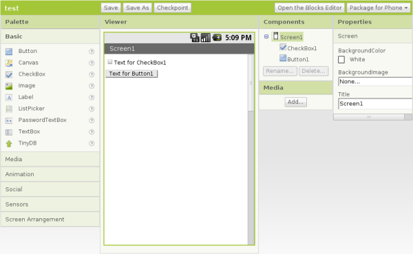
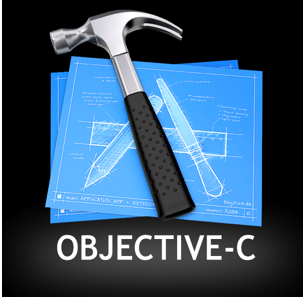
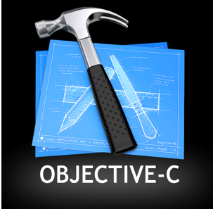
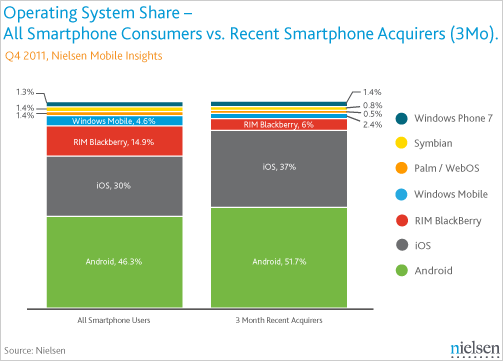
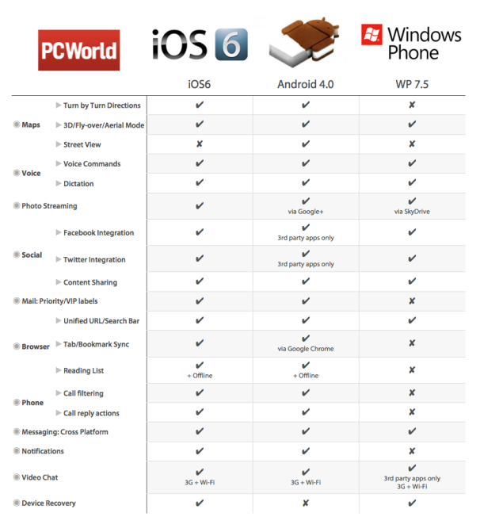
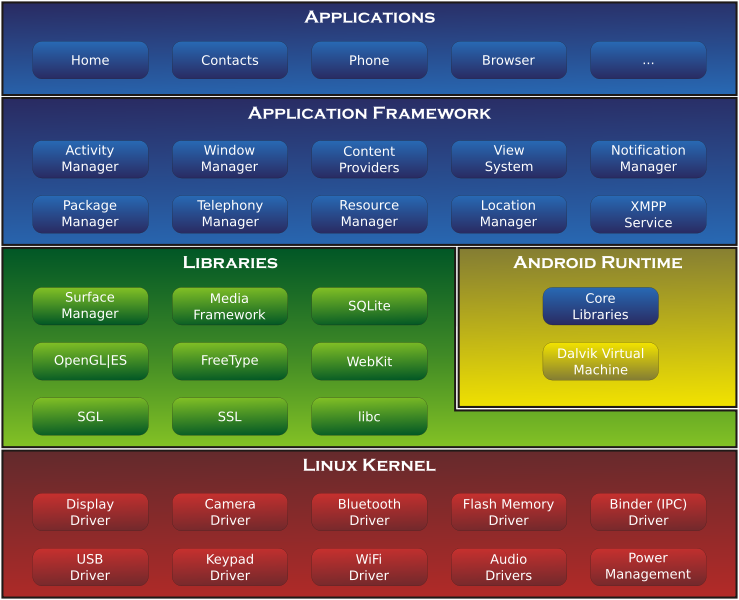
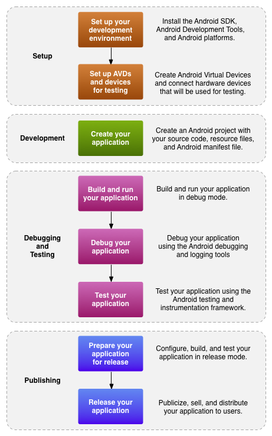
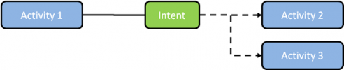
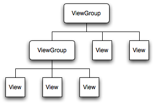
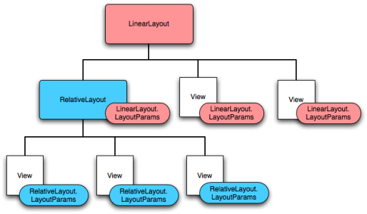

Android Development
Jarrell Waggoner
Resources
App Inventor
Android vs. IOS
Companies

Language
 

Price
$25 one-time vs. $99 annually
75% profits
Platform
Any platform vs. Mac Only
Market Share
Details
About Android
- First release: 2008
- Based on the Linux kernel
- Dalvik instead of JVM
- Over 200,000 apps with over 3 billions downloads
Versions
- Cupcake
- Donut
- Eclair
- Froyo
- Gingerbread
- Honeycomb
- Ice Cream Sandwich
- Jelly Bean
Architecture
{kind=link}
Building an App
Requirements
- Windows, Mac, or Linux
- Java JDK
- Android SDK
- Eclipse (classic)
- ADT Plugin for Eclipse
- An Android API (15 or above)
Installed through the Android SDK Manager
Development Overview
{kind=link}
Organization
- Intent
- Activity
- ViewGroup
- View
- ViewGroup
- Activity
Intents
Sends messages between activities, and selects the appropriate activity
Activity

View and ViewGroup
View
Interactive controls that appear in an app
Types of Views
- TextView
- EditText
- Button
- CheckBox
- RadioButton
ViewGroup
Collection of Views, which handle the layout of controls in an activity
Types of ViewGroups:
- AbsoluteLayout
- FrameLayout
- LinearLayout
- RelativeLayout
- TableLayout
View and ViewGroup
Files
AndroidManifest.xml: Registers ActivitiesBuildConfig.java: Global variables which control how the project is builtR.java: Maps unique numbers to named constantsMainActivity.java: Code for activity
(name varies)activity_main.xml: xml description of layout
(name varies)